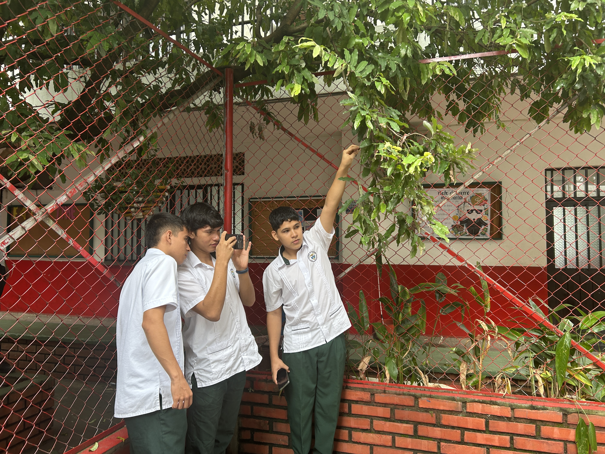
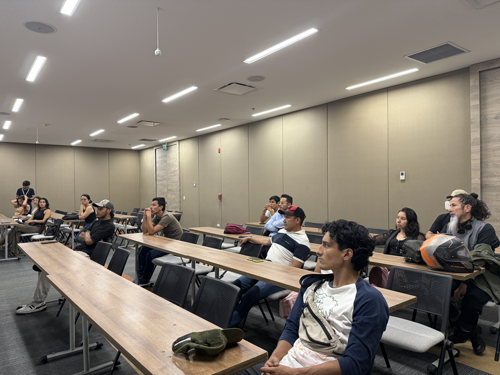
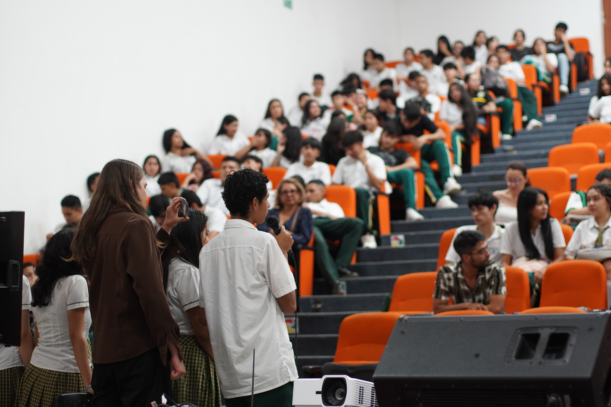
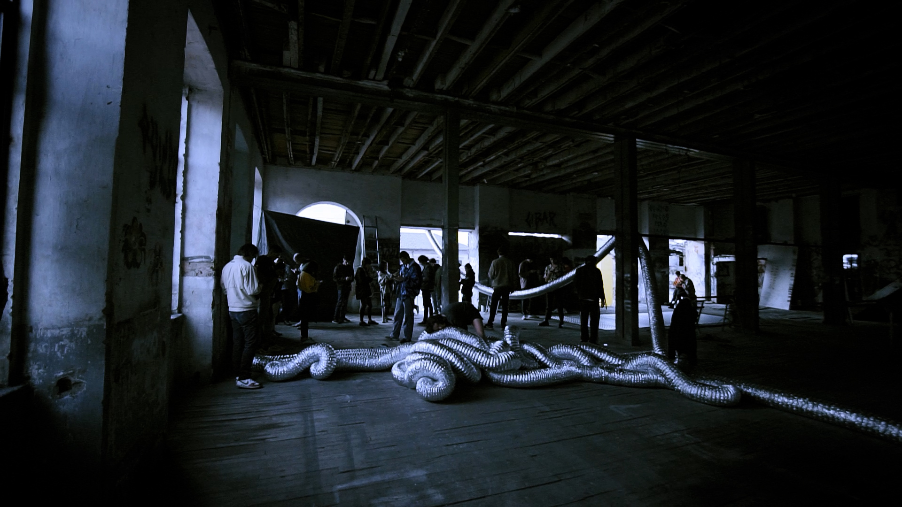

Espacios de aprendizaje, creación colectiva e intercambio de saberes alrededor del cine y la imagen.

01 / TERRITORIO

02 / LABORATORIOS

03 / CREACIÓN
04 / PRODUCCIÓNPELÍCULAS Y PROCESOS
PRODUCCIÓN

01 / CORTO
Intentos por dejarse caer dentro
Un grupo de personas sobrelleva sus vidas al ser afectadas por su existir. Experimentan álgidos momentos políticos en su país mientras les surgen cuestiones sobre la compresión de la realidad.
Al borde de las cordilleras orientales de Colombia, donde se unen el relieve y la llanura, un grupo de jóvenes pasa sus días contemplando la existencia orgánica del planeta. Mientras tanto, un hombre huye y su humanidad se desvanece. La fluidez del agua recoge sus cuerpos y los atraviesa.